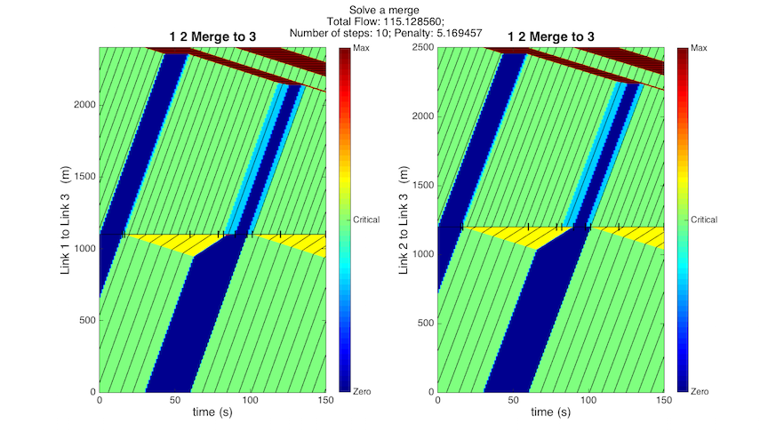

An example for solving a merge junction using a convex program
This script illustrates how to use the TEC toolbox for solving an unsignalized merge junction.
Contents
Configure parameters
clearvars -except dbg % profile on t_horizon_start = 0; sim_steps = 5; step_length = 30; % seconds t_horizon_end = sim_steps*step_length; % Number of vehicles that we would consider as admissible solution admissibleTolerance = 1;
Percent error of the full range e.g. $, $
errors = struct; errors.e_default = 0.0; errors.e_his = 0.0; % historical data error errors.e_est = 0.0; % estimated initial condition error errors.e_meas_flow = 0.0;
Set the resolution for solving the HJ PDE on each link:
dx_res = 1; % meters dt_res = 1; % seconds
Set the default_para road parameters:
default_para = struct; default_para.beta_off = 0.2; default_para.vf = 65*1609/3600; %65 miles/hr default_para.w = -(7.5349)*1609/3600; %m/s calibrated from corsim %default_para.w = -(8.125)*1609/3600; %m/s Here v/w = 8, just to resolve the discritization error default_para.kc_pl = 34.6569/1609; %veh/m calibrated from corsim default_para.qmax_pl = default_para.kc_pl*default_para.vf; %veh/s default_para.qon_max = default_para.kc_pl*default_para.vf; default_para.qoff_max = default_para.kc_pl*default_para.vf; default_para.km_pl = default_para.kc_pl*(default_para.w-default_para.vf)/default_para.w; default_para.v_min = 0*1609/3600; default_para.v_max = 65*1609/3600;
Define an example merge network:
The link 1 & 2 merge to link 3, each with lengths in km:
len_link1 = 1.1; len_link2 = 1.2; len_link3 = 1.3; net = initNetwork; net.addLink(1, default_para, 1, len_link1, 'freeway'); net.addLink(2, default_para, 1, len_link2, 'freeway'); % 1.5 lanes simulate a limited capacity while still using the default_para net.addLink(3, default_para, 1.5, len_link3, 'freeway'); % function addJunc(self, junc, inlabel, outlabel, type_junc, ratio, T) T_init_grid = ones(sim_steps,1)*step_length; net.addJunc(1, [1, 2]', 3, 'merge', [1; 1], T_init_grid);
Set the initial and boundary conditions
Set initial conditoins randomly or staticly. Initial traffic density is initialized constants with even discretization.
Ini.link_1.IC = net.network_hwy.link_1.para_kc*[1, 1, 1, 0, 0]'; Ini.link_2.IC = net.network_hwy.link_2.para_kc*[1, 1, 1, 0, 0]'; Ini.link_3.IC = net.network_hwy.link_3.para_kc*[1, 1, 1, 1, 1]'; net.setInitialCon(Ini);
Set the boundary condition. The downstream boundary flow is not set to aviod infeasibility.
q1_us_data = net.network_hwy.link_1.para_qmax*[1, 0, 1, 1, 1]'; q2_us_data = net.network_hwy.link_2.para_qmax*[1, 0, 1, 1, 1]'; q3_ds_data = net.network_hwy.link_3.para_qmax*[1, 0, 1, 0, 1]';
Set all parameters intended for control as empty or disabled
hard_queue_limit = struct; soft_queue_limit = struct;
Solve the internal boundary flows exactly
This is the while loop for iteratively regridding and eventually getting the admissible condition.
% Flags for iteratively updating time discretization getAdmissible = false; loopCounter = 0; T_junc = T_init_grid; while getAdmissible == false && loopCounter <=50 loopCounter = loopCounter+1; %=============================================================== % update the grid at the junction net.network_junc.junc_1.T = T_junc; net.network_junc.junc_1.T_cum = [0; cumsum(T_junc)]; %=============================================================== % update boundary conditions along with the new grid % setBoundaryCon(obj, link, q_in, q_out, T_in, T_out) net.setBoundaryConForLink(1, q1_us_data, [], T_init_grid, T_junc); net.setBoundaryConForLink(2, q2_us_data, [], T_init_grid, T_junc); net.setBoundaryConForLink(3, [], q3_ds_data, T_junc, T_init_grid); %=============================================================== % define and solve optimization program LP = optProgram; LP.setConfig(net, t_horizon_start, t_horizon_end, t_horizon_end,... hard_queue_limit, soft_queue_limit) LP.setConstraints( errors); %=============================================================== % Add objective functions LP.applyAdmissibleCon(1); %=============================================================== %solve program [x, fval, exitflag, output] = LP.solveProgram; %=============================================================== % Post process the data Mos = postSolution(x, net, LP.dv_index, LP.end_time, dx_res, dt_res,... hard_queue_limit, soft_queue_limit); % Uncommente the following two lines to plot an esimates in each % iteration. %Mos.estimateState(); %Mos.plotJuncs('all', 'Solving a merge') [getAdmissible, steps] = Mos.checkSolution(admissibleTolerance); if getAdmissible == false T_junc_cum = Mos.updateTimeGrid(steps); % updated T_junc T_junc = T_junc_cum.junc_1.T; end end Mos.estimateState(); Mos.plotJuncs('all', 'Solve a merge') % profile viewer % p = profile('info'); % profsave(p,'./result/matlab_profiler_results');
Solution status = optimal Solution value = -20.247229 Solution status = optimal Solution value = -18.977545 Solution status = optimal Solution value = -208.899422